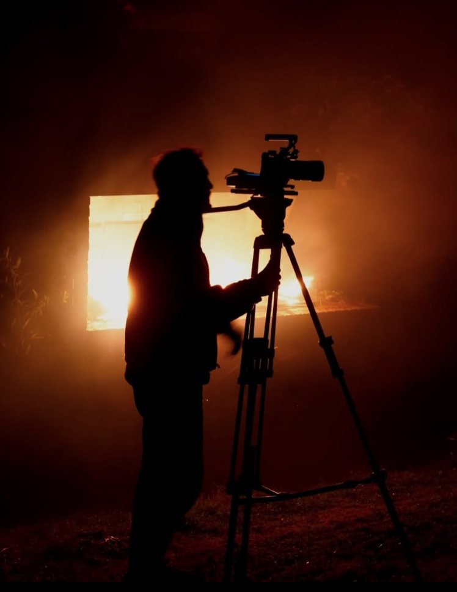

Je filme des mondes
qui n’existent pas encore.
Fiction, clips, captations et cinéma indépendant.
Des images étranges, humaines et sans frontières.
Je travaille avec la caméra comme un outil de mise en scène : construire un cadre, trouver une lumière, créer une atmosphère et donner une forme aux histoires.
Basé en Île-de-France, je suis disponible pour des tournages comme chef opérateur, cadreur ou renfort image, ainsi que pour des projets de réalisation et de montage.
La caméra n’est qu’une machine.
Derrière, il y a l’œil, le corps, l’humain.

L’image avant tout.
Je suis chef opérateur, réalisateur et monteur.
Formé à l’ESRA Rennes, je travaille depuis plus de dix ans dans l’audiovisuel, entre fiction, télévision, clips, captations et films indépendants.
J’ai notamment travaillé comme cadreur pour des émissions de télévision, comme chef monteur sur une émission diffusée sur France 3 Bretagne et comme réalisateur, cadreur et monteur sur des programmes diffusés sur Brezhoweb.
Depuis 2025, je développe également une activité régulière de chef opérateur sur des fictions, clips et courts métrages.
En parallèle, j’ai participé à une quarantaine de tournages avec le mouvement Kino, comme réalisateur, cadreur, monteur ou assistant. Cette expérience m’a appris à travailler vite, avec peu de moyens, à m’adapter aux équipes et à chercher des solutions plutôt que des excuses.
Je suis également cofondateur de Morzhol Prod, association consacrée à la production de films indépendants en français et en breton.
Mon travail se situe quelque part entre cinéma, expérimentation et artisanat.
J’aime les images qui racontent quelque chose avant même que les personnages parlent.
Le cinéma est ce que j’ai trouvé de mieux pour contourner les limites de la vie et m’explorer.